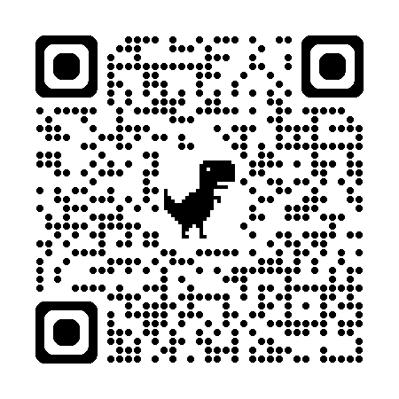

:(
Your PC ran into a problem and needs to restart. We're
just collecting some error info,and then we'll restart for
you.
20% complete

For more information about this issue and possible fixes, visit
https://www.windows.com/stopcode
If you call a support person, give them this info:
STOP CODE: CRITICAL_PROCESS_DIED